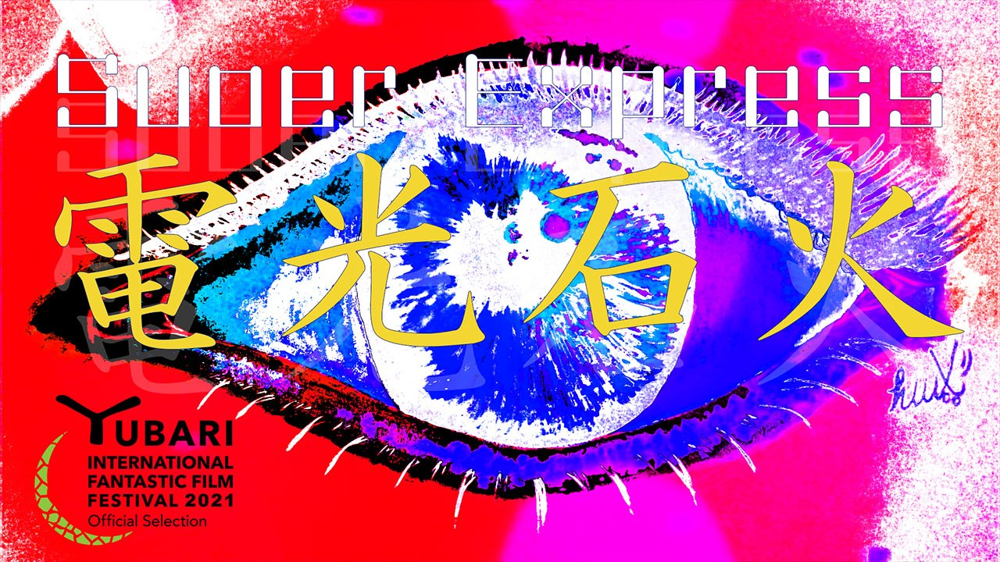

2020年制作の短編映画。盗塁王を1度獲得した元プロ野球選手・涼宮（主人公）は膝の故障で引退し、第二の人生を生きている。やがて涼宮はパンティを盗むことに喜びを見出し、生きがいになっていく。そんな涼宮とパンティの交流を描く。
欲望を突き詰めた先は狂気とも言える闇か？盗むという行為の多面性。文脈が少し変わるだけで、人は犯罪者になってしまう。あらゆる行為に変態は潜んでいる。こうした人間の業の一端に迫った。
役割：監督・脚本・編集
上映：ゆうばり国際ファンタスティック映画祭2021 インターナショナル・ショートフィルム・コンペティション選出
8分24秒
Selected for the International Short Film Competition at the Yubari International Fantastic Film Festival 2021. Director, screenwriter and editor. 8 min 24 sec.
A short film made in 2020. Suzumiya, a former professional baseball player who once won the stolen-base title, has retired due to a knee injury and is living his second life. Before long he finds joy in stealing panties, and it becomes his reason for living. The film depicts the relationship between Suzumiya and panties.
Does the pursuit of desire end in a darkness that could be called madness? The film explores the many sides of the act of stealing. With only a slight change of context, a person becomes a criminal. Perversion lurks in every act. The film probes one facet of human karma.